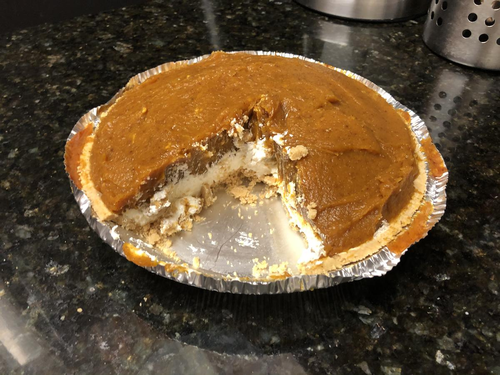

Based on a Keebler Recipe
Personal rating: 3 / 5

Graham Cracker Pie Crust
4 oz cream cheese, softened (microwave on high for 15-20 seconds)
1 Tbsp milk
1 Tbsp sugar
1 tub whipped topping (thawed if frozen)
1 cup milk, cold
2 packages vanilla flavor instance pudding (2x 4-serving size)
1 can (16 oz) pumpkin
1 tsp ground cinnamon
1/2 tsp ground ginger
1/4 tsp ground cloves